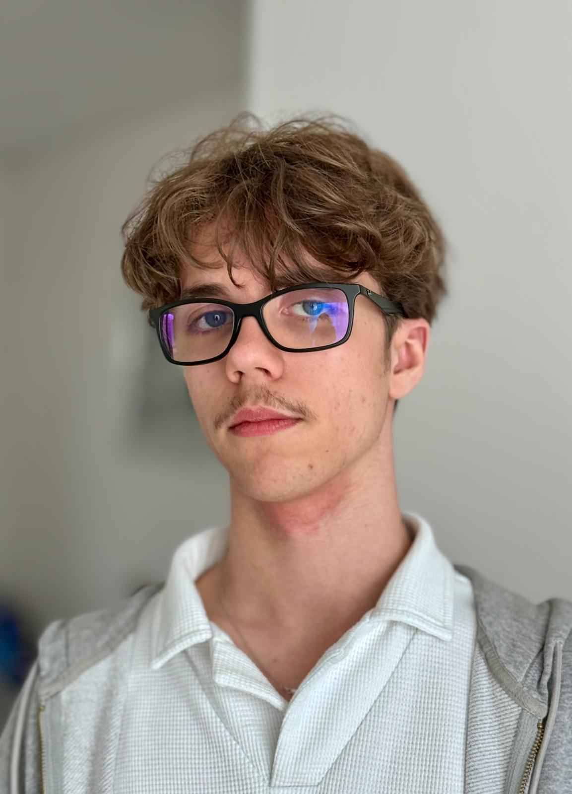

- Curieux
- Studieux
- Intéressé
- Motivé
À propos de moi
Puis en 4ème, je décide de prendre des cours sur OpenClassroom, je commence par le C++, le HTML et le CSS. Ensuite, pendant l'année de 3ème, je fais un stage de découverte de 1 semaine à l'IMERIR (L’institut méditerranéen d'étude et recherche en informatique et robotique) où je découvre la programmation Python pour la première fois.
À mon entrée au lycée, je choisis les spécialités NSI (numérique et sciences informatiques), HGGSP (histoire-géographie, géopolitique et sciences politiques) et AMC (Anglais monde contemporain) avec une option mathématique. C'est au lycée que je développe vraiment mes compétences dans le langage Python. En parallèle, je continue de m'auto-former notamment en renforçant mes compétences en HTML et CSS puis en apprenant les bases du JavaScript.
Je créais aussi des petits projets en lien avec les cours ou des projets personnels. Finalement, j'obtiens mon bac avec mention et je décide de me diriger vers une alternance à l'imerir pour mes études supérieurs.
Mes perspectives d'avenir restent assez floues, je vise plusieurs métiers : développeur, ingénieur dans l'aérospatial ou des métiers dans la cybersécurité.
Formations et experiences
Collège Madame de Sévigné
09/2018 à 06/2021
Bia (Brevet d'Initiation aéronautique) mention Bien
Lycée Pablo Picasso
09/2021 à 06/2024
DEUST IOSI à l'IMERIR
09/2024 à 2026
Stages
Stage d'observation à l'imerir
Février 2021
Stage d'observation à Gybeset Informatique
Novembre 2021